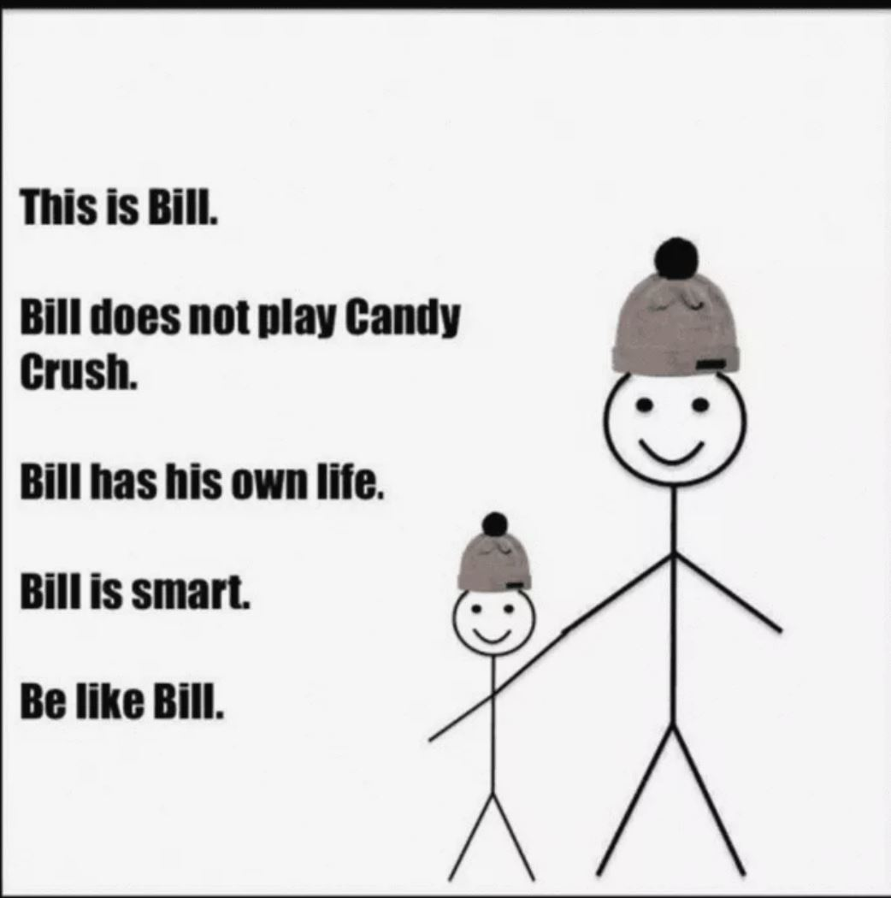
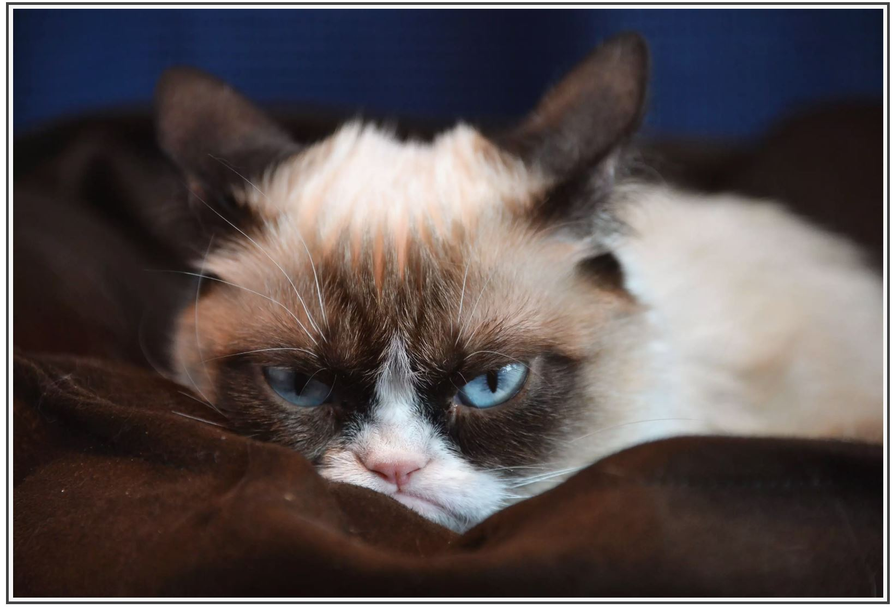
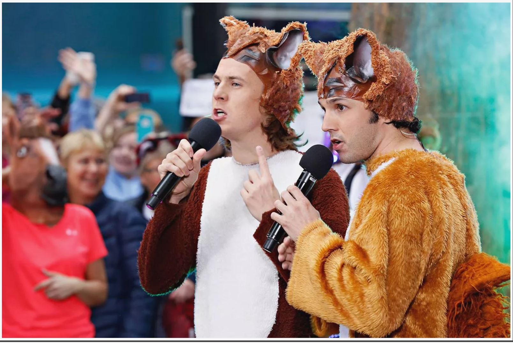

Browse Memes
Checkout the description of each meme below
| Image | Name and Description |
|---|---|
|  | Be Like Bill |
| Bill is a stick-person illustration with white space left for captioning. The version pictured
here is Bill wearing a hat. There are also versions of Bill sitting at a computer.
Bill lets you make passive-aggressive public judgments about other people's life choices — an all-too irresistible appeal in modern society. To comment on something you disagree with, the innocuous Bill stick figure is an easy way to transmit your message. |
|

| Kermit Sipping Tea Meme: "But That's None of My Business" |
| While the adorable muppet imagery seems innocent enough, this meme allows someone to freely pass judgment on other people for some perceived fault or failing. If you disagree with someone's life choices or practices, the very meme-able Kermit will do the judging for you. | |

| Kylo Ren's Tri-Lightsaber |
| When the trailer of Star Wars: The Force Awakens was released, fans went into a frenzy over the character Kylo Ren's tri-lightsaber. Apparently, the functionality of such a mythical weapon was debatable. This spurred a viral form of playful vandalism where readers around the world edited different implements onto Ren's lightsaber, such as this example of a Swiss Army knife. | |
|  | Grumpy Cat |
| Grumpy Cat was a beloved housepet from Arizona whose real name was Tardar Sauce. The kitty had a disorder called feline dwarfism, leaving her with a distinctive underbite that gave off a pouting facial expression. This little beast became the poster cat for sarcasm and faux negativity. Thousands of captioned meme photos have been created using Tardar's seemingly grumpy face. Tardar, who passed away in 2019, actually was a very happy and friendly cat, which makes the sarcasm memes even richer! | |
|  | Ylvis: What Does the Fox Say? |
| Norwegian comedy and music duo Ylvis asked the burning question, "What sound do foxes make?" Sure enough, they not only provided the answer but presented it via a preposterous dance video that went viral. This musical meme has gotten a lot of traction since its 2013 inception. |